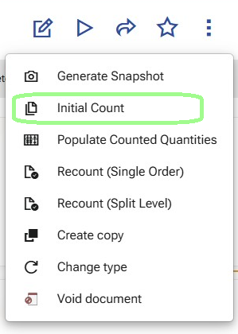
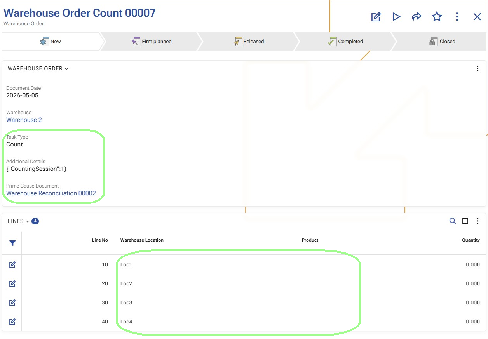

Initial Count
Use Initial Count to generate the first count orders for the reconciliation.
This operation starts the first counting session and creates one or more Warehouse Orders based only on the existing Warehouse Reconciliation Details.
The purpose of Initial Count is to send the selected reconciliation scope to the warehouse workers for the first physical count.

When to use it
Use Initial Count after Generate Snapshot and before any counting has started.
At this stage:
- the reconciliation document is already prepared;
- the snapshot has already created the reconciliation details;
- the first counting session has not started yet.
What the operation checks
Before generating the count orders, the system checks that:
- the reconciliation document is in state Planned or Firm Planned;
- the document type of the generated Warehouse Orders can be determined by the warehouse policy
CountingOrderDocumentType; - there is at least one reconciliation detail that is not Cancelled;
- all non-cancelled reconciliation details are still in their initial state:
- ReviewStatus = Created
- Session = 0
This means Initial Count is used only for the first counting pass.
For details about how the CountingOrderDocumentType policy is configured for Planned Reconcile, see Configuration.
What the operation uses as input
The operation uses only the existing Warehouse Reconciliation Details.
No additional source is read at this stage.
For order generation, the system includes only details that are:
- ReviewStatus = Created
- Session = 0
Rows with ReviewStatus = Cancelled are not included in the generated orders.
What the operation creates
The system creates one or more Warehouse Orders with:
TaskType = Count- a document type determined by the warehouse policy
CountingOrderDocumentType Warehouse = Warehouse Reconciliation.WarehouseParent = Warehouse ReconciliationPrime Cause Document = Warehouse ReconciliationDocumentDate = todayState = Planned
In the order header, AdditionalDetailsJson stores the counting session information:
CountingSession = 1
It also stores TotalQuantityBase for the details included in the respective order.
How the order lines are generated
The generated Warehouse Order Lines contain only counting locations.
They do not contain detailed product positions.
If the reconciliation details contain several rows for the same Warehouse Location, the system creates only one order line for that location.
In other words, the details are grouped by Warehouse Location, so each location appears only once in the generated order lines.
Each generated order line contains:
Warehouse LocationWarehouse ZoneTaskType = Count
The detailed product fields remain empty at this stage, because the first counting pass is location-based.

How the split works
The generated orders can remain in a single document or be split into multiple documents.
This is controlled by the warehouse policy CountingSplitLevel.
- If the policy is not defined, the system creates one Warehouse Order.
- If the policy is set to
0, the system creates one Warehouse Order. - If the policy is set to a value greater than
0, the system splits the orders by warehouse zones at the corresponding hierarchy level.
This affects only the distribution of the initial counting work. The source data remains the same - the existing reconciliation details.
For details about how the CountingSplitLevel policy is configured for Planned Reconcile, see Configuration.
What changes in the reconciliation details
After Initial Count generates the first count orders, the included reconciliation rows enter the first counting session.
For these rows:
- Session becomes
1 - ReviewStatus becomes Started
This marks them as active rows in the first counting cycle.
Note
For an overview of how Session and ReviewStatus change throughout the process, see Sessions and review statuses.
The next operation is usually Execute count orders in WMS Worker.